Shiso, Hyogo: things to do, food and stays
Shiso · Hyogo
Shiso
Highlighted on the Hyogo map.
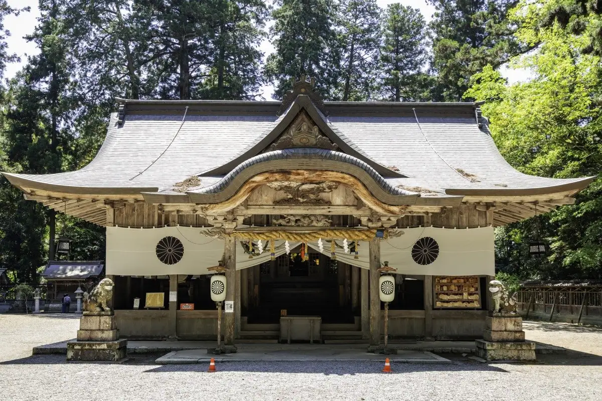
Stay
Yamasaki Ryokan Q 中門前屋（山崎旅館Q）
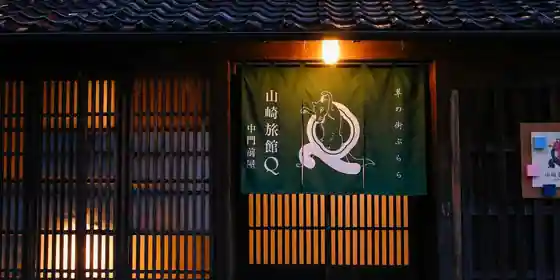
Yamasaki Ryokan Q Chumon Maeya (Yamazaki Ryokan Q)
ホテルサフラン
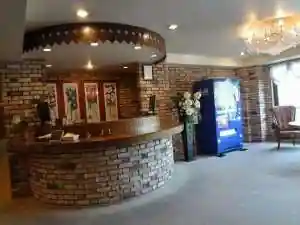
Hotel Safuran
ホテル日新会館
Hotel Nisshin Kaikan
Hotel in Yamazaki, Shiso; 2-minute drive from Yamazaki IC.
川辺の宿 菊水
Kawabe No Yado Kikusui
Inn in Yamazaki, Shiso with riverside setting; 5-minute drive from Chugokudo(Yamazaki) IC.
Ｙａｍａｓａｋｉ Ｒｙｏｋａｎ Ｑ 中門前屋（山崎旅館Ｑ）
Yamasaki Ryokan Q Chumon Maeya (Yamazaki Ryokan Q)
Ryokan inn in Yamazaki, Shiso with a renovated traditional house.
伊沢の里
Isawa No Sato
Inn in Yamazaki, Shiso; 5-minute drive from Yamazaki IC.
ウッドデザインパーク与位
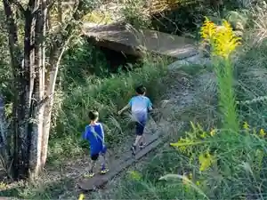
Uddodezain Park Yo Kurai
スポニックパーク一宮 国見の丘山荘
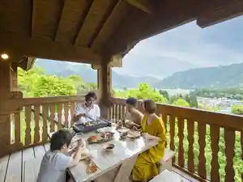
Suponikku Park Ichinomiya Kunimi No Oka Sanso
ＳｏＬＡ＊ＹＡＤＯ（ソラやど）
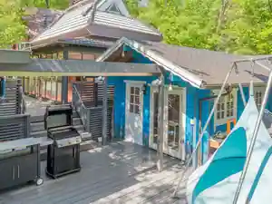
SoLA * YADO(Sora Yado)
モリソンヴィラ 石垣のログハウス
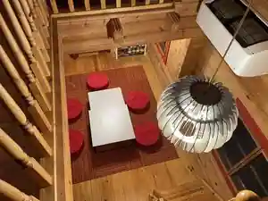
Morison Villa Ishigaki No Rogu House
Inn in Ichinomiya, Shiso with one group per day.
東山温泉メイプルプラザ
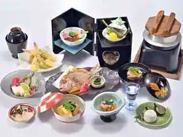
Higashiyama Onsen Meipuru Plaza
Inn at Higashiyama Onsen in Haga, Shiso with a quiet countryside setting.
いろりの宿 木の助
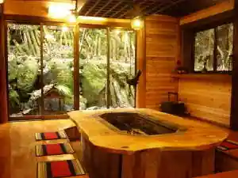
Irorino Yado Ki No Jo
Inn in Ichinomiya, Shiso with an irori hearth dining room and one group per day.
Dining
うどん末治
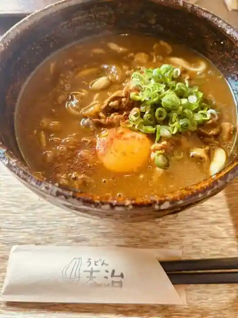
Udon Sueji
老松
Oimatsu
星と月
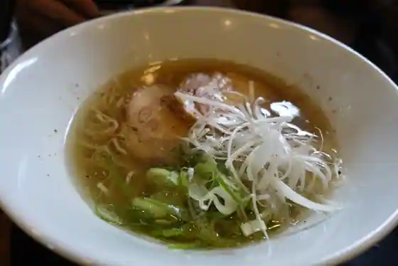
Hoshi To Gatsu
トッポ・ジージョ
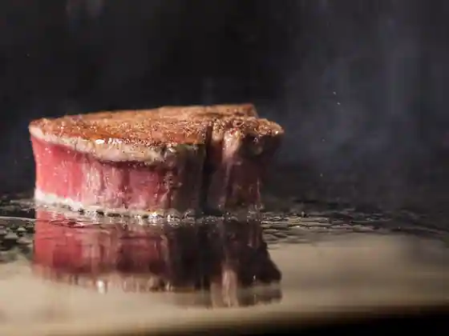
Toppo Jijo
YAMA SAND
YAMA SAND
さんしょう
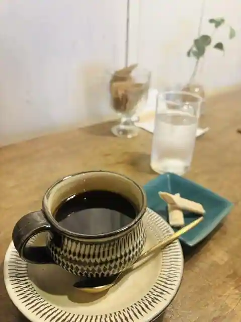
Sansho
道の駅 みなみ波賀 レストラン楓の里
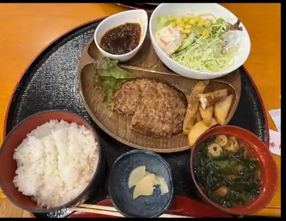
Michi No Eki Minami Haga Restaurant Momiji No Sato
ご飯とちょっと三杯 渡邉
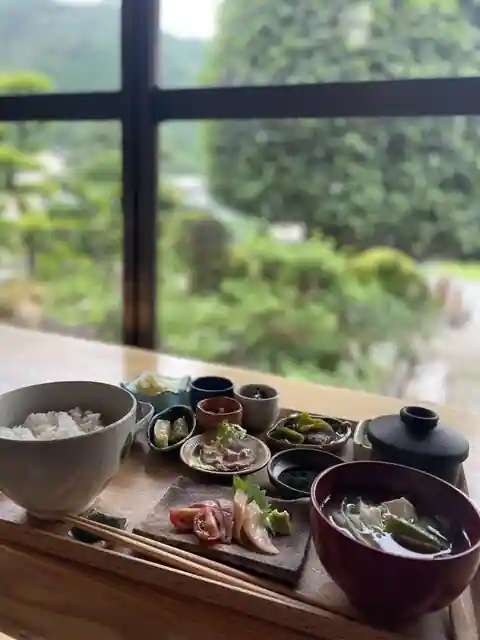
Go Meshi Tochotto Sanbai Watanabe
おふくろ食堂
Ofukuro Shokudo
バード マン
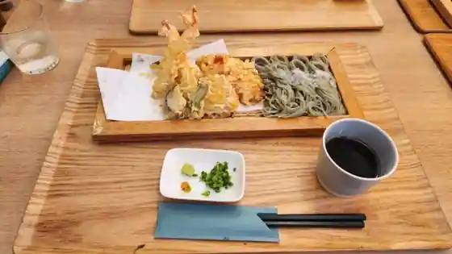
Bado Man
道の駅 みなみ波賀
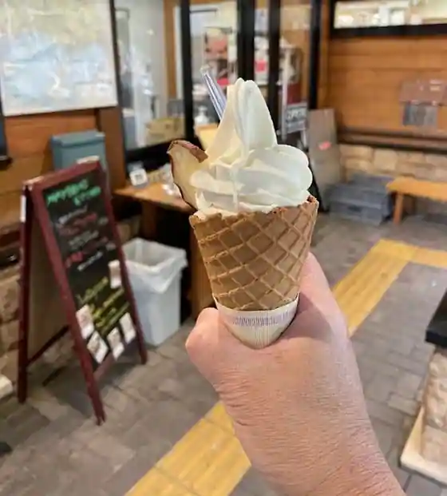
Michi No Eki Minami Haga
道の駅 播磨いちのみや
Michi No Eki Harima Ichinomiya
柊
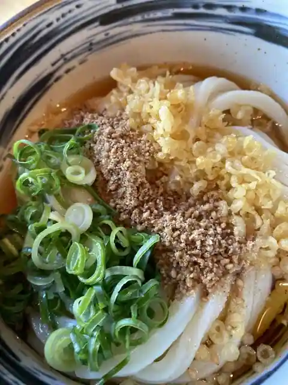
Hiragi
マリー ポアラーヌ 山崎店
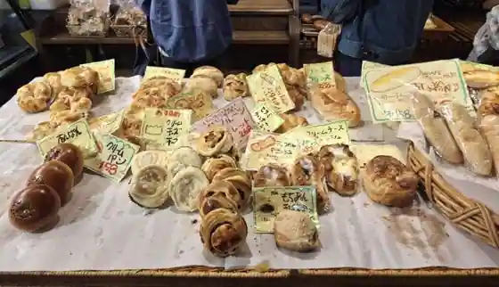
Mari Poaranu Yamazaki
餃子屋 福籠
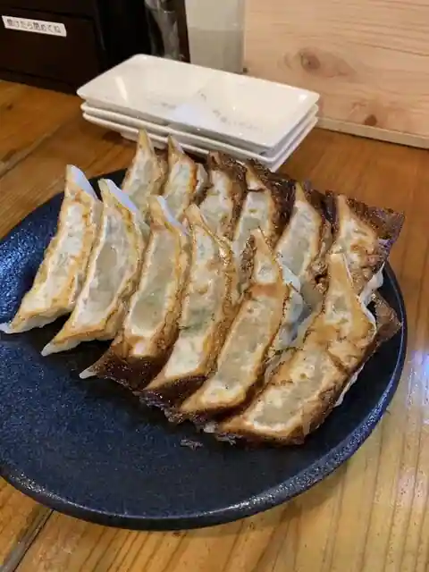
Gyozaya Fuku Kago
元祖流しそうめん みやなか
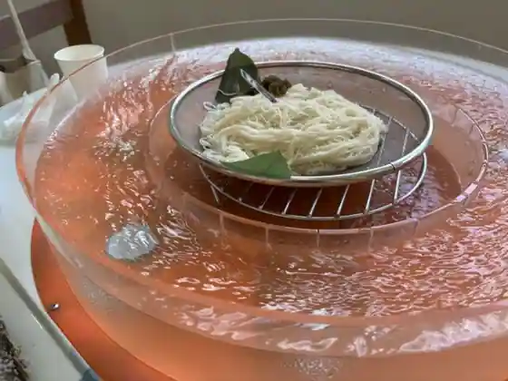
Ganso Nagashi Somen Miyanaka
たい焼き松川
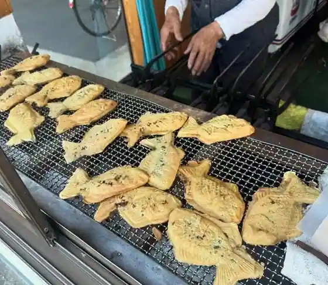
Tai Yaki Matsukawa
四季旬菜 和
Shiki Jun Na Wa
森のお菓子工房 木いちご
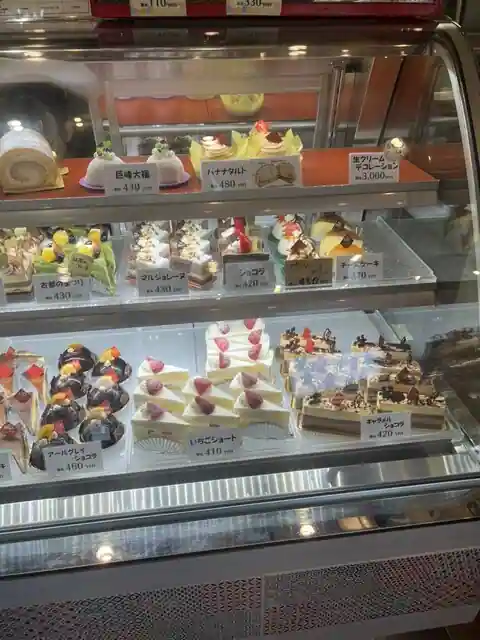
Mori No Kashi Kobo Ki Ichigo
山水
Sansui
回転すし 活いき亭
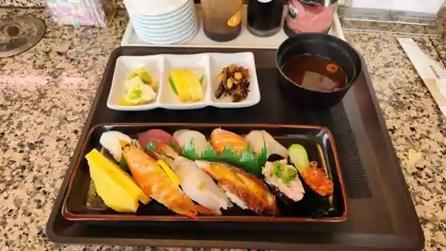
Kaiten Sushi Katsu Iki Tei
道の駅 はが
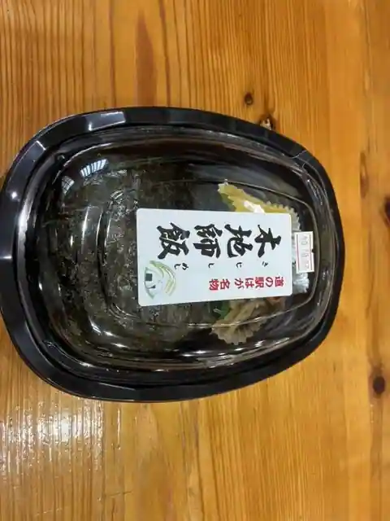
Michi No Eki Haga
生谷温泉 伊沢の里
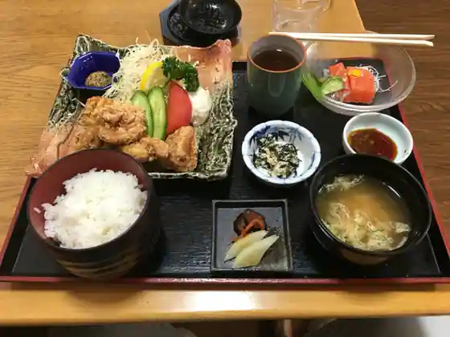
Seikoku Onsen Isawa No Sato
ながさわ 山崎店
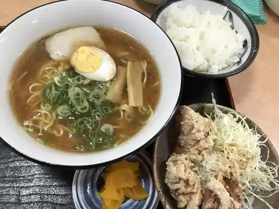
Nagasawa Yamazaki
Sights
Harimanokuni Ichi no Miya Iwa Shrine
Saijo Yama Park Momiji Yama